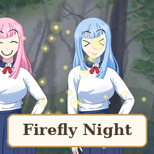

Firefly Night
A choice story (visual novel) with Hana, Yuki and Rin: the game asks your name, then petals at sunset, a firefly forest, a thunderstorm with lightning, a timed choice, magic snow in the middle of summer… and 4 endings. All made with nodes.
⬇️ Download the project (3.6 MB)